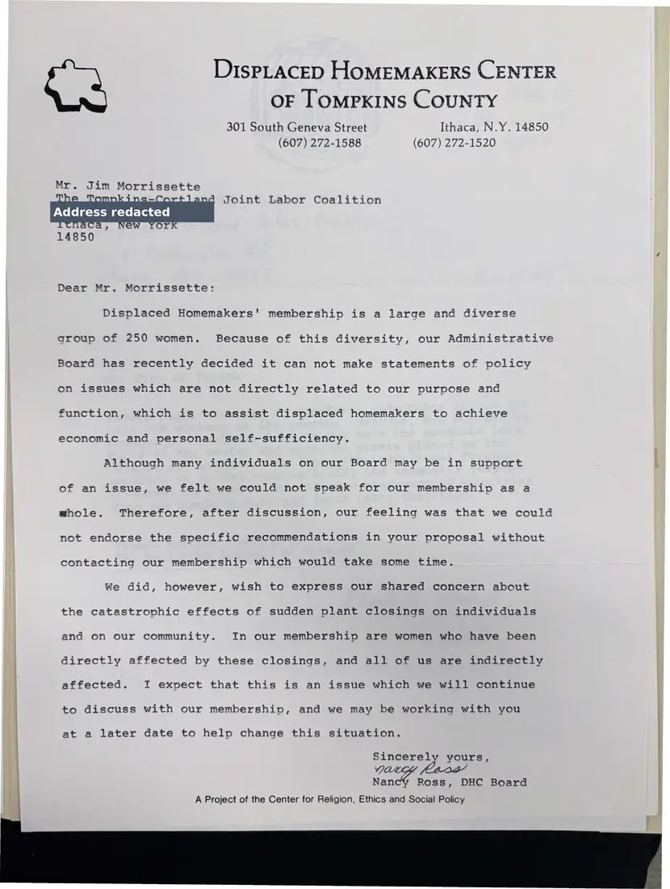

Letter, 1 page
Displaced Homemakers Center of Tompkins County on plant closings
Undated [1985–1986]Undated
The center's board president writes that the board could not endorse the coalition's proposal, because its 250 members are diverse, but shares the coalition's concern about the effects of sudden plant closings on women and their families.
Download or cite this itemPages


(open zoom view)A personal home address has been covered on this page.
Read the page text (machine-read, mostly readable)
This text was generated automatically from the photograph and has not been corrected. The image is the authoritative record.
DiIsPpLACED HOMEMAKERS CENTER OF [oMPKINS COUNTY 301 South Geneva Street Ithaca, N.Y. 14850 (607) 272-1588 (607) 272-1520 Joint Labor Coalition Dear Mr. Morrissette: Displaced Homemakers' membership is a large and diverse group of 250 women. Because of this diversity, our Administrative Board has recently decided it can not make statements of policy on issues which are not directly related to our purpose and function, which is to assist displaced homemakers to achieve economic and personal self-sufficiency. Although many individuals on our Board may be in support of an issue, we felt we could not speak for our membership as a whole. Therefore, after discussion, our feeling was that we could not endorse the specific recommendations in your proposal without contacting our membership which would take some time. We did, however, wish to express our shared concern about the catastrophic effects of sudden plant closings on individuals and on our community. In our membership are women who have been directly affected by these closings, and all of us are indirectly affected. I expect that this is an issue which we will continue to discuss with our membership, and we may be working with you at a later date to help change this situation. Sincerely yours, 7 yee Nan Ross, DHC Board A Project of the Center for Religion, Ethics and Social Policy
See something wrong, or recognize a person or event? Send a correction. If you hold rights in this item or think it should not be public, write to the same address.